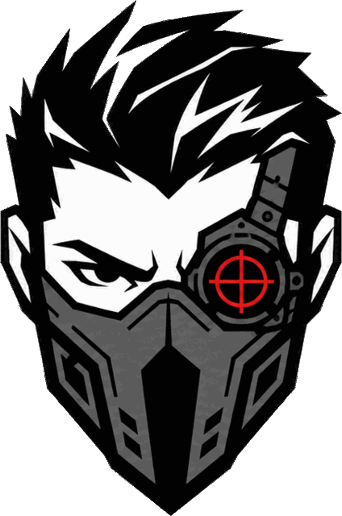

kds does it in one.
A tiny, zero-dependency bash CLI that finds and kills leftover JS dev servers —
vite, next, bun, wrangler & friends — without touching Docker or your
editor. The installer drops a one-line instruction into your agent files,
so instead of an ss/ps/kill
expedition through your process table, your agent just runs kds.
$curl -fsSL https://raw.githubusercontent.com/zanellig/kds/main/install.sh | bash

see it work
rules of engagement
bun / npm / pnpm / yarn running devvitenext devturbo … devwrangler devworkerdkds --dry-run lists numbered candidates and the exact command to stop one. Add --pretty for runtime, resource, binding, and working-directory details.kds --pid PID rechecks the target, then stops its whole process group.TERM, waits 2 seconds, then KILLs anything still standing.